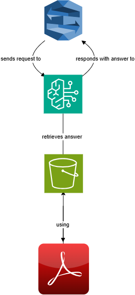

Scenario: Automating Employee Travel & Expense Inquiries at AnyCompany
Background: AnyCompany has over 1,000 employees spread across multiple regions. Each month, dozens of employees travel for business and submit expense reports for reimbursement. HR and finance teams are frequently bombarded with questions like: "What’s the per diem for meals in New York?" "Can I expense an Uber from my hotel to the client site?" "What’s the approval process for international travel?" These repetitive inquiries consume valuable time from HR, finance, and management teams, reducing overall productivity and delaying employee reimbursements.
Benefits of the Bot
1. Improved Employee Experience Employees get instant, consistent answers without digging through policy documents or waiting for email responses.
Available 24/7, supporting employees in different time zones or traveling internationally.
2. Increased HR & Finance Productivity Frees up HR and finance teams from answering repetitive questions.
Allows staff to focus on more strategic tasks like policy improvement or exception handling.
3. Consistency & Compliance Ensures employees receive accurate, up-to-date information.
Reduces the risk of misinterpreting policies or submitting non-compliant expenses.
4. Scalability Easily scales to support more users, more questions, or more policies (e.g., integrating company credit card or vendor guidelines).
Amazon Lex supports continuous improvement by training on real queries received.
5. Cost Efficiency Reduces the volume of support tickets and email threads related to travel and expense policies.
Minimizes errors and processing delays that could lead to financial losses.
Solution: To improve operational efficiency and employee self-service, AnyCompany developed a chatbot using Amazon Lex. It accepts questions from the user and passes that question to Amazon Bedrock. And through a process called RAG (Retrieval-Augmented Generation), Amazon Bedrock integrates with a knowledge base containing all travel and expense policy information for AnyCompany. The data for the knowledge base is contained in S3. Employees can now access this chatbot via Slack, Microsoft Teams, or the company’s internal HR portal and ask questions in natural language, 24/7. 